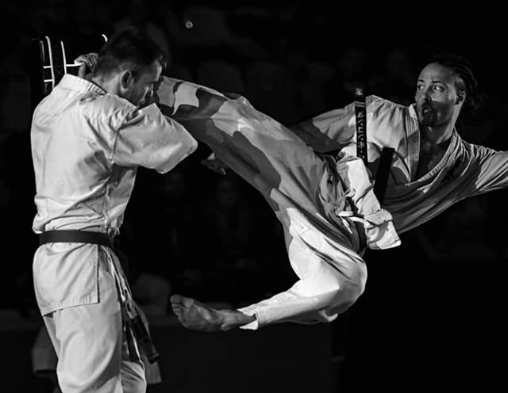

Sensei Harold Bongonda

Qualifications
- Coach sportif certifié
- 12 ans de karaté Kyokushin (2ème Dan)
- 3 ans de Taekwondo
- Depuis récemment, pratique la boxe thaïlandaise et le jiu-jitsu brésilien
Motivation
J’ai commencé le Karaté Kyokushin à l’âge de 14 ans, en 2008. J’ai immédiatement développé un attrait pour ce sport et mon Sensei m’a rapidement appris à enseigner à mon tour. J’ai démarré par l’échauffement, pour plus tard, progressivement, enseigner des techniques de combat aux plus nouveaux.
Lorsque je me suis installé à Mons, j’ai déploré de ne pas y trouver de clubs de ma discipline, et j’ai donc décidé d’ouvrir le mien. Aujourd’hui, après plus de trois ans, mon dojo fait ma fierté grâce aux élèves aussi passionnés par le Kyokushin qu’assidus dans sa pratique.
Palmarès
- 2ème place au Championnat Beker Der Kempen à Beerse en 2017
- 2ème place au Championnat Openweight à Kapellen en 2017
- 2ème place au Championnat Tezuka Cup à Rotterdam en 2017
- 3ème place au Championnat Beker Der Kempen en 2014
- 1ère place au Championnat Interclub de Namur en 2012